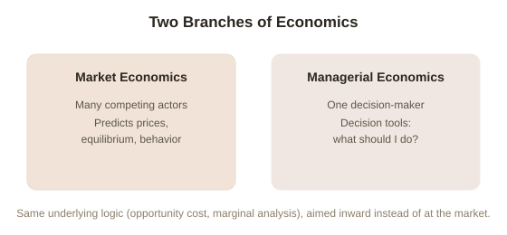

Chapter 1: The Economics of One
Almost everything usually meant by "economics" is about markets: prices set by supply and demand, competitors reacting to each other, whole populations of buyers and sellers reaching some kind of equilibrium. Managerial economics is the other branch — the one aimed inward, at a single decision-maker (a business, a team, or just one person) figuring out how to use limited resources well, with no reference to competitors or market prices required at all. This topic is built around that inward-facing half: how to think clearly about your own work, your own business, and your own expenses, using the same rigorous tools economists use for markets, just pointed at a single unit instead of a whole system.
The one concept underneath everything else in this topic
Opportunity cost is the true cost of any choice: not the money or effort spent on it, but the value of the next-best alternative you gave up to do it. This sounds almost too simple to be useful, but it's the concept every other tool in this topic is built from. A decision that "costs nothing" in cash — spending a free evening on one project instead of another, using idle staff time on one task instead of another — still has a real opportunity cost: whatever the next-best use of that same time or resource would have produced. Ignoring this is the single most common error in decisions that feel free because no money visibly changes hands.
Why this needs its own dedicated framework
Standard "market" economics answers questions like "what price will this good settle at" — useful, but not the question a manager, a freelancer, or a household actually faces day to day. The more common real question is closer to: "given what I have, what should I actually do with it?" That's a fundamentally different kind of problem — an optimization problem about one decision-maker's resources, not a prediction problem about many independent actors' collective behavior. Managerial economics takes the same underlying logical tools (opportunity cost, marginal analysis, cost structure) that market economics uses to predict prices, and repurposes them as decision tools for a single person or organization instead.

A concrete opportunity-cost example, worked through
Consider someone deciding whether to spend a Saturday building a side project themselves or paying a freelancer $200 to do it. The naive framing is "doing it myself is free." The opportunity-cost framing asks: what's the value of what that Saturday would otherwise produce — rest that improves the coming week's output, paid work at the person's normal rate, or something else entirely? If that person's time is worth more than $200 for that Saturday in any realistic alternative use, doing it "for free" is actually the more expensive option, once opportunity cost is counted honestly. This single reframe — always asking what the resource's next-best use actually is, not just what a task's sticker price is — is the thread running through every chapter that follows.
Try this
Ideas for noticing or testing this in your own life.
- Pick one thing you're currently doing "for free" — with your own time rather than money — and name its actual opportunity cost: what specifically would that same time produce if spent on the next-best alternative? If you can't name a concrete answer, that itself is informative.
Worth pulling on?
A few loose threads from this chapter — if any of these genuinely grab you, that's a good sign of where to go next.
- Opportunity cost tells you what a choice really costs — but not, on its own, whether a specific choice is worth making. → Picked up directly in Chapter 2, with the actual decision rule.